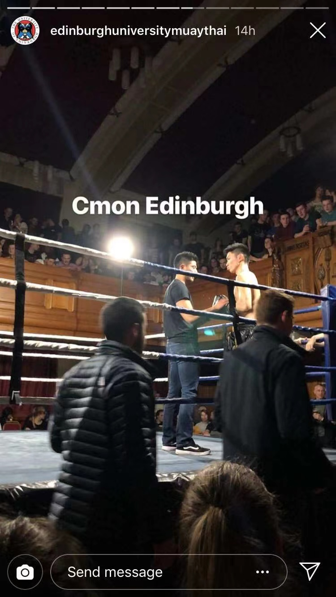

THE UNIVERSITY OF EDINBURGH
JIAWEN ZHANG
-



The above three images are the records of my undergraduate
life in Edinburgh, Scotland.
- The first image indicates the moment before one fight game I did with a fighter from Glasgow University.
- The second image indicates the moment that Edinburgh University's Muay Thai Club's celebrating Halloween.
- The third image indicates the moment that my portrait in front of Old College of Edinburgh Univeristy.